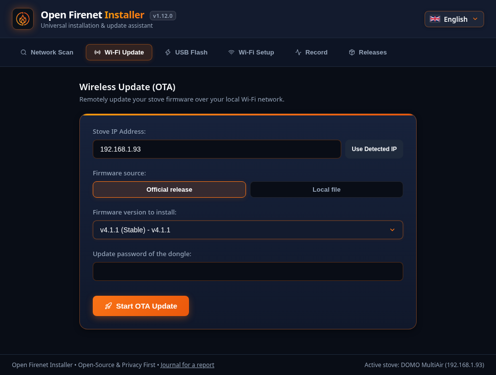

Erste Schritte
Vom leeren Board bis zum im Browser gesteuerten Ofen in fünf Schritten.
-
Prüfen Sie die Firmware-Version Ihres Ofens
Öffnen Sie auf dem Ofen-Display das Menü Info und lesen Sie die Softwareversion des Mainboards ab (z. B. 2.27 oder 2.29). Schlagen Sie diese anschließend auf der Kompatibilitätsseite nach.
-
Besorgen Sie die Hardware
Sie benötigen zwei Dinge:
- Ein ESP32-S3-Entwicklerboard mit nativem USB. Der Chip muss ein ESP32-S3 sein: Ein normaler ESP32, ESP32-C3 oder ein Board mit reinem USB-UART-Brückenchip (CH340, CP2102) funktioniert nicht.
- Ein USB-Datenkabel vom Board zur USB-A-Buchse des Ofens. Reine Ladekabel funktionieren nicht.
Welches Board Sie wählen sollten und welche Modelle erprobt sind: siehe Hardware.
Boards mit zwei USB-Ports: Der Ofen muss an den mit „USB“ oder „USB OTG“ beschrifteten Port angeschlossen werden (nativer USB des Chips). Der mit „UART“ oder „COM“ beschriftete Port dient nur zum Flashen und für Protokolle. Dies ist der häufigste Fehler.
-
Flashen Sie das Board mit dem Installer
Laden Sie den Installer für Ihr Betriebssystem von der Releases-Seite herunter und schließen Sie das Board an Ihren Computer an. Der Installer erkennt das Board, liest es aus und wählt im Reiter USB-Flash automatisch Erstinstallation vor. Er lädt die aktuelle offizielle Firmware herunter, prüft die Signatur, schreibt sie auf das Board und führt Sie zur WLAN-Einrichtung.

Betriebssystem Datei Windows open-firenet-installer-windows-x86_64.exemacOS (Apple Silicon) open-firenet-installer-macos-arm64macOS (Intel) open-firenet-installer-macos-x86_64Linux open-firenet-installer-linux-x86_64.AppImageoder das.deb-PaketIhr Computer kann beim ersten Start warnen. Der Installer ist nicht mit einem kostenpflichtigen Herausgeberzertifikat signiert, weshalb Windows und macOS ihn noch nicht kennen. Das ist normal.
- Windows: Blauer Bildschirm „Der Computer wurde durch Windows geschützt“ (Microsoft Defender SmartScreen). Klicken Sie auf Weitere Informationen, dann auf Trotzdem ausführen.
- macOS: Die Datei ist ein normales Programm. Machen Sie sie im Terminal mit
chmod +xgefolgt vom Dateinamen ausführbar und starten Sie sie. Falls macOS meldet, dass das Programm nicht geöffnet oder der Entwickler nicht verifiziert werden kann, öffnen Sie Systemeinstellungen > Datenschutz & Sicherheit und klicken Sie auf Dennoch öffnen.
Um die Echtheit der Datei zu prüfen, vergleichen Sie ihren SHA-256-Hash mit der bei jedem Release veröffentlichten Datei
SHA256SUMS.Unter Linux muss Ihr Benutzer der Gruppe
dialout(oderuucp) angehören, um auf serielle USB-Ports zugreifen zu können. Wenn das Board nicht erkannt wird, halten Sie beim Einstecken die BOOT-Taste gedrückt. -
Verbinden Sie den Stick mit Ihrem WLAN
Geben Sie WLAN-Name und -Passwort im Reiter WLAN-Setup des Installers ein, oder erledigen Sie dies über Ihr Smartphone:
- Verbinden Sie sich mit dem vom Board erstellten WLAN-Netzwerk
Open-Firenet-Setup(kein Passwort). - Die Konfigurationsseite öffnet sich automatisch. Falls nicht, rufen Sie
http://192.168.4.1auf. - Wählen Sie Ihr Heimnetzwerk (2,4 GHz), geben Sie das Passwort ein und speichern Sie. Das Board startet neu und verbindet sich mit Ihrem Netzwerk.

- Verbinden Sie sich mit dem vom Board erstellten WLAN-Netzwerk
-
Schließen Sie den Stick an den Ofen an
Verbinden Sie den nativen USB-Port des Boards mit der USB-Buchse des Ofens, und schalten Sie den Ofen am Netzschalter aus und wieder ein. Öffnen Sie nach etwa einer Minute
http://open-firenet.local(oder die im Reiter Netzwerk-Scan des Installers angezeigte IP-Adresse).Die Seite zeigt das Modell Ihres Ofens und dessen Betriebszustand. Sie umfasst drei Reiter: Ofen (Dashboard und Steuerung), Stick (WLAN, MQTT, Neustart) und Diagnose (Verbindung zum Ofen, Protokoll, alle Messwerte). Falls ein Banner anzeigt, dass der Stick nicht mit dem Ofen verbunden ist, siehe Fehlerbehebung.
Spätere Updates
Sobald der Stick in Ihrem Netzwerk eingebunden ist, können Sie neue Versionen im Reiter WLAN-Update des Installers ohne Umstecken installieren. Ihr Computer und der Stick müssen sich im selben Netzwerk befinden; bei einem Timeout siehe die Netzwerkanforderungen.
Optional seit Firmware 4.0: Schützen Sie drahtlose Updates mit einem Passwort. Schließen Sie den Stick an Ihren Computer an, öffnen Sie den WLAN-Reiter des Installers und vergeben Sie ein „Update-Passwort“. Der Installer fragt dieses bei jedem drahtlosen Update ab.
